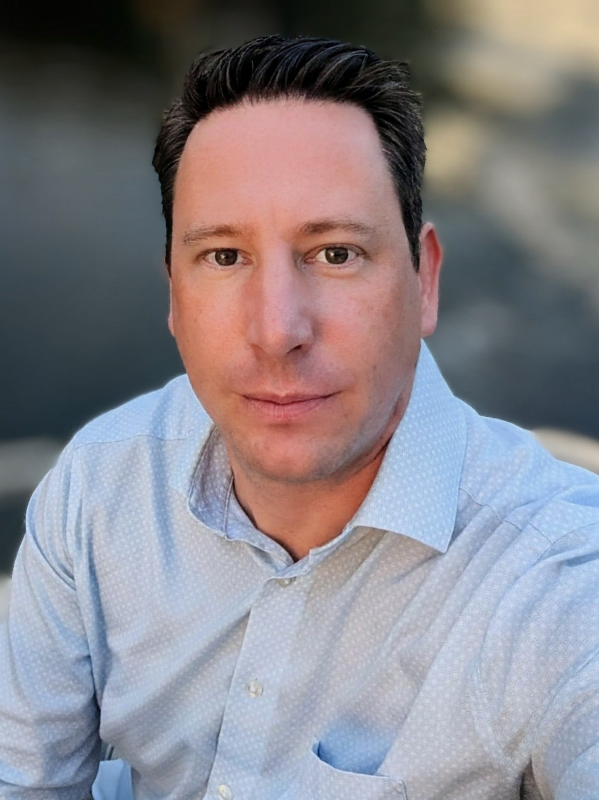

I started with a wrench in my hand as an automotive mechanic and roadside patrol officer. Today, I steer mission-critical railway traffic management systems and international software teams—backed by over a decade of operational and technical product leadership.

My career started in the workshop as an automotive mechanic and out on the highway as a technical patrol officer at TCS. Performing live diagnostics and repairs directly with stranded motorists taught me how physical systems fail—and why pragmatic problem-solving matters more than theory.
Combining hands-on operational grit with advanced business information systems strategy. Select any capability below for details.
Three core themes define my work across physical infrastructure and digital transformation.
Whether managing national rail traffic disposition (RCS/TMS) or emergency roadside apps, I specialize in high-availability environments where software stability directly impacts real-world movement.
Having led up to 35 shift workers and logistics teams with full budget accountability, I design digital processes that actually work for the people on the ground—day and night.
Steering cross-border development squads across Germany, Romania, and the Philippines using SAFe—turning complex requirements into reliable, standards-compliant releases.
Beyond code and infrastructure, sustainable success is built on psychological safety, cross-functional trust, and relentless customer focus.
In 24/7 operations and mission-critical rail systems, blame cultures destroy performance. I foster environments where teams openly address bottlenecks, experiment safely, and take shared ownership of outcomes.
Having worked hands-on on the shop floor before managing multi-million budgets, I serve as an effective translator between engineers, operational staff, and executive stakeholders—ensuring strategic goals match physical constraints.
From a federal apprenticeship on the shop floor to executive master's studies and leveraging AI to build own products.
Currently completing the Master of Advanced Studies (MAS) in Digital Business Transformation at FHNW, building upon an AACSB-accredited Bachelor of Science in Business Information Systems (2022)[cite: 8] and a Diploma in Business Administration.
To stay sharp as a technical product leader, I love leveraging AI to build and code my own software products and custom JavaFX applications outside of work—working hands-on with Java, MySQL, Git, and Google Cloud Services.
Email or LinkedIn is fastest. Whether you want to exchange thoughts on scaled agile in critical infrastructure, digital transformation, or leadership across physical and digital operations—I am always glad to connect over a virtual coffee.